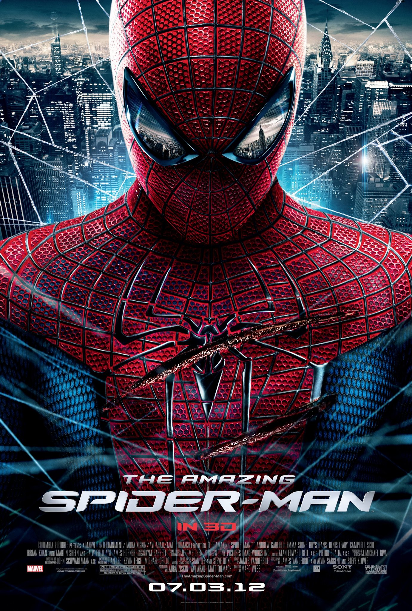

Peter Parker, un adolescente solitario que busca respuestas sobre la misteriosa desaparicion de sus padres, termina colandose en Oscorp y recibiendo la picadura de una araña geneticamente modificada. Tras una tragedia personal que lo lleva a convertirse en el heroe Spider-Man, Peter debe equilibrar su naciente romance con Gwen Stacy mientras intenta detener al Dr. Curt Connors, un cientifico consumido por un experimento fallido que lo ha transformado en el temible Lagarto.
